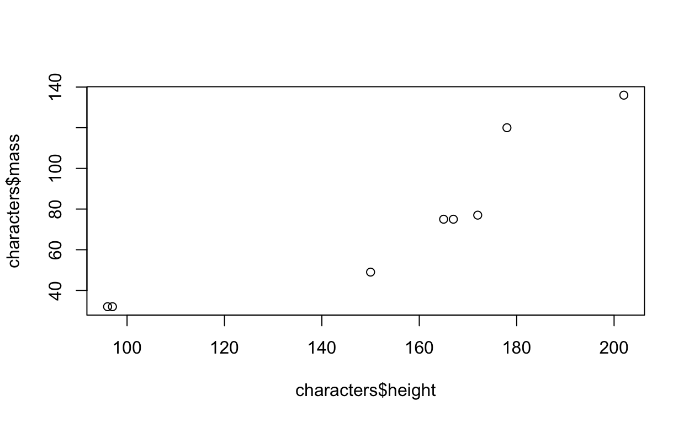

Regression Review
Linear Relationships
When we say two quantitative variables have a linear relationship, we generally don’t mean that every pair of points falls exactly on a line. This is true for variables such as time elapsed and time remaining which are said to have a deterministic relationship. Most variables do not have a deterministic relationship and are influenced by many different factors. For e.g., everyone who is 165 cm tall will not have the same wrist circumference. When we say those variables have a random relationship, what we mean is that if we look at the average of all possible y-values at each particular x in the population, those averages would form a line.

Here the red dots represent the average y-value of all the points stacked vertically at each x-value. We do not literally expect every point to fall on this straight line. It’s a statement about the average behaviour.
We also won’t have all possible (x,y) pairs that ever were or ever will be to make up this population. In practice, we have a small number of points and commonly will not have multiple y-values for each x-value we observe. This means that when we have sample data, we aren’t finding these average red dots. What we are doing is observing that the points we have generally fall in the pattern of a line and we do our best to fit the best line through them.
This “best fitting line” is defined as the line that minimizes the square of the vertical distances between all of the points and the fitted line. We can see a representation of this below:

This vertical difference represents the difference in y-value we observe and the y-value our linear model (best guess at the true relationship). In statistics, we refer to this as our error. It makes sense that we would like this to be as small as possible.
Scatterplots
Visualizing the Data
When we would like to fit a model to our data, our first step is generally to do some exploratory data analysis and try our best to visualize the data if possible to take an educated guess at the correct model to fit. When we have only two variables, as is the case in simple linear regression, we can visualize the data set with a scatterplot. Both graphs from the previous section were scatterplots.
A scatterplot will put a dot at the appropriate co-ordinate for each (x,y) pair. From there we can see if the points tend to fall along a line or if there may be some other type of pattern (such as a parabola or a logarithmic relationship).
In R we can make a simple scatterplot using the
plot(x, y)
function where we replace x and y with our vectors for the x and y variables respectively. Remember that if our data is contained in a dataframe we will need to use the $ to specify where our variable vectors are located such as
plot(dataframeName$x, dataframeName$y)
In the package ggplot, there is a dataset containing the height and mass of various Star Wars characters. I have selected the first 8 observations and stored the data in dataframe called characters.
Here is a printout of the dataframe
print(characters)## # A tibble: 8 x 3
## name height mass
## <chr> <int> <dbl>
## 1 Luke Skywalker 172 77
## 2 C-3PO 167 75
## 3 R2-D2 96 32
## 4 Darth Vader 202 136
## 5 Leia Organa 150 49
## 6 Owen Lars 178 120
## 7 Beru Whitesun lars 165 75
## 8 R5-D4 97 32To make a scatterplot of the dataset I would go
plot(characters$height, characters$mass)
One of the first things you may notice is that the labels are not great and there is no title on the plot. Because we had to specify the dataframe name, that also appears in the axis labels. There are many ways we can tailor our plot but one common fix you will need to make is to add labels by putting some optional commands into the plot(x,y) function as follows:
plot(x, y, main = “Plot title here”, xlab = “X-axis label here”, ylab = “Y-axis label here”)
For our starwars plot we can add plot labels like this:
plot(characters$height, characters$mass,
main = "Mass vs Height of Various Star Wars Characters",
xlab = "Height (in cm)",
ylab = "Mass (in kg)")Excercises (Scatterplots)
In R there is a built-in dataset contained in a dataframe called mtcars. Here is a print out of the first 6 rows of the dataframe using the head() function:
head(mtcars)Make a scatterplot where you use the gas mileage (mpg) as y and the weight (wt) as your x. Add labels and a title to the plot. Note that the mileage is recorded in miles per gallon and the weight is reported in kilograms.
plot(mtcars$wt, mtcars$mpg,
main = "Mileage vs Weight of Various Cars",
xlab = "Weight (in kg)",
ylab = "Gas Mileage (in mpg)"
)ggplot
Another thing you may have noticed is that the scatterplots we made look aesthetically different from the plots in the regression review. Those plots were made using ggplot as part of tidyverse package. This is an alternative to using base R to make plots that many find easier to make fine tuned customizations or alter the appearance. The choice is yours which one you decide to use.
To make plots using ggplot, we first need to make sure our data is in a dataframe. Next we make a ggplot object where we specify our data frame and the variables we are using and then we add on “layers” that add plots and features to our graph. To make a simple scatterplot we would first make the ggplot object as
ggplot(dataframe, aes(x = x, y = y))
and then add (using a + symbol) a layer of points using the function
geom_point()